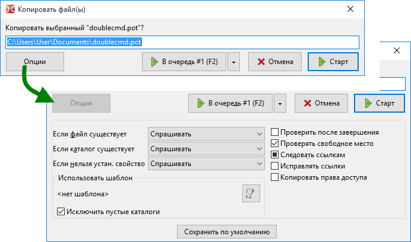

Окно подтверждения копирования или перемещения файлов с возможностью изменить некоторые параметры. Эти окна для обеих операций отличаются лишь несколькими параметрами, поэтому они будут описаны вместе.

Можно вызвать клавишами F5 (копирование), Shift+F5 (копировать в этот же каталог) и F6 (перемещение), кнопками на панели функциональных клавиш или внутренними командами (cm_Copy, cm_CopySamePanel и cm_Rename). Также это диалоговое окно появляется при перетаскивании файлов (если отмечено Показать диалог подтверждения при перетаскивании).
В окне отображается редактируемое поле с целевым каталогом, и вы можете вручную изменить целевой путь и имя файла. С помощью F5 или F6 вы можете переключать выделение в следующем порядке: базовое имя файла, имя файла, расширение, путь, всё.
Если целевой каталог не указан (cm_CopySamePanel или ручное редактирование), файлы будут скопированы в исходный каталог.
Несколько кнопок:
Старт и Отмена — запускает или отменяет операцию.
В очередь — добавляет задание в очередь файловых операций. Это удобно, если у вас одновременно работают несколько заданий: вы можете изменить порядок операций в очереди, остановить или приостановить выполнение задачи. Окно со списком файловых операций можно вызвать двумя способами: используйте пункт Файловые операции в меню Вид или Alt+V (внутренняя команда cm_OperationsViewer).
Опции — раскрывает дополнительные параметры.
Первая группа параметров определяет действие при разрешении конфликта имён или когда невозможно установить свойства файлов:
Если файл существует — Если файл с таким именем уже существует в каталоге назначения. Действия: Спрашивать, Перезаписывать, Перезаписывать более старые, Пропускать.
Если каталог существует — Если папка с таким именем уже существует в каталоге назначения. Действия: Спрашивать, Объединять, Пропускать.
Если нельзя устан. свойство — Что делать, когда не удаётся установить время файла, его атрибуты и т.д., например, из-за ограничений файловой системы в целевом каталоге. Действия: Спрашивать, Никогда не устанавливать, Игнорировать.
Спрашивать (по умолчанию) даёт больше вариантов решения: пропустить, переименовать (вручную по одному или автоматически) и другое.
Следующая группа — это фильтр, возможность указать, какие файлы копировать или перемещать (маски файлов, возраст и т.д.). Здесь вы можете видеть выбранный шаблон и:
Кнопка Выбрать шаблон ( ) открывает окно со списком сохранённых шаблонов и возможностью добавить новый.
) открывает окно со списком сохранённых шаблонов и возможностью добавить новый.
Исключить пустые каталоги — Если отмечено, будут скопированы или перемещены только непустые каталоги. Работает только с шаблонами.
Список следующих параметров будет различаться в зависимости от типа файловой операции и семейства операционных систем.
Проверить после завершения — Если отмечено, Double Commander будет сравнивать исходный файл и скопированный файл в целевом каталоге: побайтовое сравнение (Windows) или контрольные суммы BLAKE2 (Linux и другие). Double Commander попытается свести к минимуму эффекты дискового кэша. Недоступно в Mac OS.
Проверять свободное место — Double Commander подсчитывает размер выбранных файлов, поэтому может проверить, достаточно ли свободного места в целевом каталоге.
Резервировать место — Если отмечено, Double Commander будет использовать предварительное выделение дискового пространства, это снизит вероятность фрагментации файла. Также это более быстрый способ создания файлов. В Windows Double Commander всегда резервирует место.
Следовать ссылкам — Если отмечено, Double Commander будет считать символьные ссылки на папки обычными папками и копировать их содержимое; вместо ссылок на файл будут скопированы файлы, на которые они указывают. В третьем состоянии (квадрат залит цветом или с тире): программа будет каждый раз спрашивать, что она должна делать.
Исправлять ссылки — Если отмечено, Double Commander проверит и, если необходимо, поправит их целевой путь с учётом целевого каталога. Если задан относительный путь, то исправленный путь тоже будет записан как относительный.
Копировать атрибуты — Если отмечено, будут скопированы атрибуты исходного файла, в противном случае будут использоваться значения по умолчанию: 666 (файлы) или 777 (папки). Также смотрите описание <CopyXattributes> здесь. Для Windows: смотрите описание <CopyAttributes> здесь.
Сбросить флаг "Только для чтения" — Если отмечено, Double Commander будет добавлять флаг разрешения на запись "w" (Linux).
Копировать дату/время — Если отмечено, будут скопирована дата модификации исходного файла, в противном случае будет использоваться текущая дата. Для Windows: смотрите описание <CopyTime> здесь.
Копировать владельца — Если не отмечено, владельцем будет пользователь, от имени которого запущена программа.
Копировать права доступа — позволяет копировать разрешения, специфичные для файловой системы NTFS, в противном случае будут использоваться права текущего пользователя (пользователь, от имени которого запущена программа). Только Windows.
Копирование при записи — Поддержка одной из особенностей файловой системы Btrfs: по умолчанию Btrfs использует принцип копирование-при-записи (copy-on-write, COW) для всех локальных файлов. Недоступно в Windows.
Примечание: При копировании файлов из архивов будет доступен только параметр Если файл существует. При копировании файлов из плагинов файловой системы (WFX) будет доступно несколько параметров: Если файл существует, Копировать дату/время и Работать в фоне (отдельное соединение). Последний параметр запрещает окну прогресса файловой операции блокировать главное окно Double Commander.
Сохранить по умолчанию — установит текущие значения как значения по умолчанию для последующих операций копирования/перемещения.
В этом диалоговом окне отображается подробная информация о ходе операции: два индикатора выполнения (для текущего обрабатываемого файла и общий), прогресс в процентах (в заголовке), общее количество файлов и количество обработанных файлов, полное имя текущего файла и имя в целевом каталоге, размер, скорость и оставшееся время.
Кнопки:
Пауза/Продолжить — позволяет приостановить или продолжить операцию.
Отмена — отменит операцию и закроет диалог.
На панель — свернёт это окно в панель операций.
Показать все — вызовет окно Файловые операции.
Дополнительные параметры, связанные с операциями копирования/перемещения, представлены на странице настроек Файловые операции.